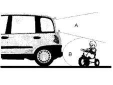
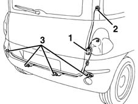
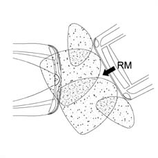
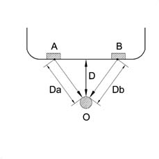

5580H parking obstacle detection device
- Path
- Descriptions > 55 ELECTRICAL EQUIPMENT > 5580 SPECIAL ACCESSORIES > 5580H parking obstacle detection device
- Kind
- system description
- Applies to
- all engines; all production periods
- Interactive page
- https://sloeber94.github.io/elrnDB-fMltpl/en/#/2888295
Applies to: all engines; all production periods
This device allows maximum ease of manoeuvring during parking; with reverse gear engaged, it indicates if the driver is approaching an obstacle that could be outside his field of vision, as illustrated in the diagram below.

A, field of vision of rear view mirror B, operating range for parking sensor
The system operates in accordance with the ultrasound 'sonar' principle: four ultrasound transducers are located in the rear bumper. They send signals to a control unit, which processes this information and determines the distance of possible obstacles.
A loudspeaker controlled by the control unit emits an intermittent tone, proportional to the distance of the obstacle detected; when the distance calculated falls below a threshold value, the sound becomes acute and constant.
The control unit is located inside the luggage compartment, on the right side; beside the control unit there is an acoustic device. beside the control unit there is an acoustic device.

1, control unit 2, acoustic device 3, transducers
The transducers are electronic receiver-transmitter devices. On request from the control unit, they emit sound ways and receive the 'return'; the wave signals are amplified and converted into digital signals, and thus sent back to the control unit.
The maximum receiver range for each transducer is defined via software to be optimum for each vehicle, thus obtaining an extremely large 'controlled area'.
For the vehicle in question this 'controlled area' is shown in the diagram:

The control unit is activated when reverse gear is engaged: under these conditions it energizes the transducers and sends them a signal request, and receives response signals from them.
These signals are processed to calculate the time taken by each wave to reach a detected obstacle and return to a transducer; by processing any cross signals (by the triangulation principle), the distance of an obstacle is calculated to a precision of ± 1 cm.
The diagram shows an example of triangulation.

A, transducer B, transducer O, obstacle Da, Distance of transducer A Db, Distance of transducer B D, effective distance processed by the control unit
The calculated distance is compared with those measured previously, determining whether the obstacle is getting closer or further away, or is at a fixed distance (e.g. a wall situated longitudinally to the vehicle).
The system detects obstacles of even very small dimensions, provided they reflect the waves; for example highly absorbent materials such as obstacles covered with fresh snow or voluminous turf are still detectable, but with more difficulty.
Similarly the presence of snow or dirt on the bumper reduces the transducers' transmission/reception capabilities.
The system does not take soil refractions into account.
The control unit emits a signal with intermittent tone: the frequency of this sound increases as the bumper comes close to an obstacle: when the calculated distance falls below 25 cm, the sound becomes acute and constant.
This threshold of 25 cm has been estimated to allow the vehicle to stop before hitting the obstacle.
If the distance measured from the obstacle increases, or if the driver disengages reverse gear, the sound stops.
If the distance measured from the obstacle remains constant, the sound ceases after about 3 seconds.